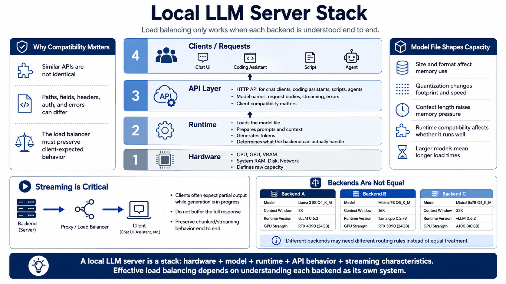

Local LLM Server Architecture
Connecting to LMS... Progress: in progress

Narration
A local LLM server is a stack. Hardware provides CPU, GPU, VRAM, system memory, disk, and network capacity. A runtime loads the model file, prepares prompts, manages context, and generates tokens. An API layer receives requests from chat clients, coding assistants, scripts, or agents. Load balancing works only when each layer is understood well enough to predict what a backend can handle.
The model file shapes capacity. Size, format, quantization level, context capability, and runtime compatibility affect memory use and response speed. A smaller quantized model may fit on modest hardware, while a larger model may require more VRAM and longer load times. A long context setting can help with document analysis, but it can also increase prompt processing time and memory pressure.
Most clients interact with local servers through HTTP APIs, often using concepts similar to cloud LLM APIs: model names, chat-style request bodies, streaming chunks, and structured errors. Compatibility is helpful but not guaranteed. Endpoint paths, request fields, headers, authentication behavior, and error formats can differ. A load balancer must preserve the behavior the client expects.
Streaming is especially important. Many interfaces expect partial output while the model is still generating, so the backend, proxy, and load balancer must avoid buffering the entire response. Each backend should also be monitored as its own system. A server with a different model, smaller context window, older runtime, or weaker GPU may need different routing rules instead of equal treatment.